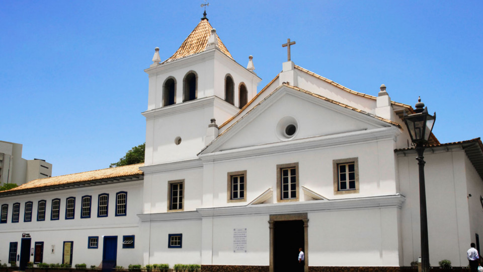
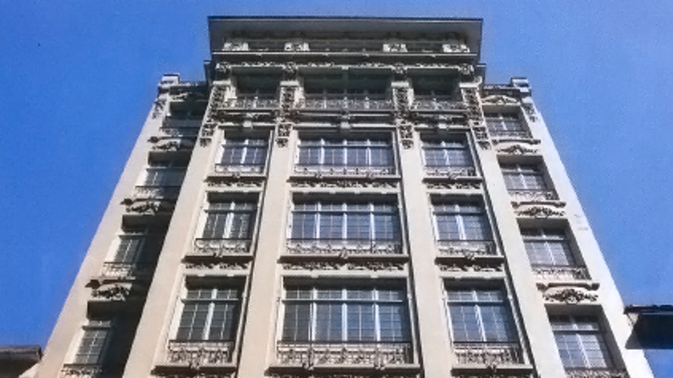

Episódio 1
Arquitetura
No primeiro episódio de nossa série abordamos o início do processo de verticalização de São Paulo!
A rota tem início no berço de São Paulo, o Pateo do Collegio.
Depois, passando por alguns dos primeiros edifícios que permitiram que a metrópole crescesse não só para os lados, mas também em direção ao céu.
Episódio 2
Símbolos & Marcos
Nosso segundo episódio traz Marcos e Símbolos desconhecidos da cidade de São Paulo!
Nossa rota passa por pontos como os depósitos noturnos e o marco da enchente, mostrando alguns dos locais desconhecidos porem com histórias por trás.
Episódio 3
Vida Noturna
Nosso terceiro episódio da primeira temporada nos leva a pontos ativos na cidade de São Paulo -- mais especificamente durante o período noturno, trazendo entretenimento e diversas opções com a gastronomia da cidade.
Episódio 4
Arte Urbana
O episódio 4 tem como foco a arte de rua da cidade, mostrando vários pontos que transbordam arte para conhecer e admirar.
Episódio 5
Museus
O quarto episódio nos leva a diversos museus, desde os mais conhecidos como o MASP até alguns mais experimentais como o museu do óculos.
A série Contrafluxo consiste de um formato onde exploramos locais menos conhecidos da cidade, mostrando lugares e fatos interessantes que o público geral, de turistas ou similares, geralmente não estão familiarizados.
Neste episódio, o primeiro da temporada, exploramos a verticalização e a arquitetura da cidade de São Paulo, visitando locais que as pessoas podem até conhecer, mas não sabem da história por trás.
CLÁUSULA DE RESERVA (Lei 9.610/98 -LEI DE DIREITOS AUTORAIS): Este site e/ou aplicativo foi publicado e é mantido pelos discentes do 4º semestre, do Curso de Graduação em Design Digital, da Universidade Anhembi Morumbi, visando a atender às exigências da disciplina PROJETO INTERDISCIPLINAR: AUDIOVISUAL. Trata-se de uma publicação temporária para propósitos estritamente acadêmicos e sem fins lucrativos. Em atendimento às exigências da Lei 9.610/98, do parágrafo 4°, do Artigo 184, do Código Penal, os discentes responsáveis por esta publicação colocam-se à disposição, por intermédio do e-mail lima.gabrielkp@gmail.com, para dirimir quaisquer dúvidas referentes à eventual violação de direitos autorais, comprometendo-se desde já, a retirar do ar, qualquer texto, som ou imagem pertencente a autor ou titular que se sinta direta ou indiretamente prejudicado.
O Pateo do Collegio é um sítio arqueológico, onde foi levantada a primeira construção da atual cidade de São Paulo, quando o padre Manuel da Nóbrega e o então noviço José de Anchieta, e outros padres jesuítas a pedido de Portugal e da Companhia de Jesus, estabeleceram um núcleo para fins de catequização de indígenas no Planalto.
O Edifício Guinle -- uma construção em estilo art nouveau com sete andares -- é considerado o primeiro arranha-céu da cidade de São Paulo, pois rompia com a regularidade da cidade. Localizado na Rua Direita, no centro da capital paulista, o prédio é tombado pelo Conpresp (Conselho Municipal de Preservação do Patrimônio Histórico, Cultural e Ambiental de São Paulo).
Inaugurado em 1924; na época de sua construção, o prédio chamou muita atenção por sua construção primorosa e detalhada.
Representou uma grande revolução arquitetônica para a cidade de São Paulo por ter sido o primeiro edifício alto a ser construído com concreto armado, além de ter sido o pioneiro dos arranha-céus de São Paulo, marcando a paisagem da região central da cidade. Outro destaque do Sampaio Moreira foi a liberação do uso de sua cobertura.
O Edifício Martinelli é um prédio localizado no Centro do município de São Paulo, Brasil. Situa-se no triângulo formado pela Rua São Bento, avenida São João e Rua Líbero Badaró, no centro da capital paulista. Devido sua altura, o local pode ser considerado um mirante, onde em suas redondezas, é possível observar pontos turísticos de São Paulo, com por exemplo o Vale do Anhangabaú e a Catedral da Sé.
Foi o segundo arranha-céu do Brasil e da América Latina, tendo sido ultrapassado pelo Edifício Joseph Gire, ou Edifício A Noite, no Rio de Janeiro, que apesar de ter iniciado sua construção apenas em 1927, foi inaugurado apenas dois anos depois, em 1929.
Edifício Altino Arantes (Banespão) é um dos prédios mais emblemáticos da capital paulista, sendo o terceiro arranha-céu mais alto da cidade e o sétimo mais alto do Brasil.
Construído a partir de 1939 pelo interventor federal Ademar Pereira de Barros para sediar o Banco do Estado de São Paulo (que ocupou o prédio até 2001) e inaugurado oito anos depois, em 27 de junho de 1947, também por Ademar de Barros, quando ele já era governador de São Paulo, foi durante mais de uma década o mais alto da cidade, até ser superado pelo Mirante do Vale, em 1960.
O Mirante do Vale (cujo nome oficial é Condomínio Edifício Mirante do Vale) é um arranha-céu localizado na cidade de São Paulo, no Brasil. Por 48 anos, foi o maior edifício do país, além de ter sido o 18º arranha-céu mais alto da América do Sul, com 170 metros de altura.
Projetado pelo arquiteto Waldomiro Zarzur, sua construção começou em 1960 e foi inaugurado em 1966. Após a sua conclusão, manteve o título de maior arranha-céu do Brasil até ser superado pelo Millennium Palace, de Balneário Camboriú, inaugurado em 10 de agosto de 2014
Pç. Pateo do Collegio, 2
Centro, São Paulo - SP
01016-040
O Pateo do Collegio é um sítio arqueológico, onde foi levantada a primeira construção da atual cidade de São Paulo, quando o padre Manuel da Nóbrega e o então noviço José de Anchieta, e outros padres jesuítas a pedido de Portugal e da Companhia de Jesus, estabeleceram um núcleo para fins de catequização de indígenas no Planalto.
R. Direita, 49
Sé, São Paulo - SP
01013-020
O Edifício Guinle -- uma construção em estilo art nouveau com sete andares -- é considerado o primeiro arranha-céu da cidade de São Paulo, pois rompia com a regularidade da cidade. Localizado na Rua Direita, no centro da capital paulista, o prédio é tombado pelo Conpresp (Conselho Municipal de Preservação do Patrimônio Histórico, Cultural e Ambiental de São Paulo).
R. Líbero Badaró, 340
Centro, São Paulo - SP
01002-010
Inaugurado em 1924; na época de sua construção, o prédio chamou muita atenção por sua construção primorosa e detalhada.
Representou uma grande revolução arquitetônica para a cidade de São Paulo por ter sido o primeiro edifício alto a ser construído com concreto armado, além de ter sido o pioneiro dos arranha-céus de São Paulo, marcando a paisagem da região central da cidade. Outro destaque do Sampaio Moreira foi a liberação do uso de sua cobertura.
R. São Bento, 405
Centro, São Paulo - SP
01011-100
O Edifício Martinelli é um prédio localizado no Centro do município de São Paulo, Brasil. Situa-se no triângulo formado pela Rua São Bento, avenida São João e Rua Líbero Badaró, no centro da capital paulista. Devido sua altura, o local pode ser considerado um mirante, onde em suas redondezas, é possível observar pontos turísticos de São Paulo, com por exemplo o Vale do Anhangabaú e a Catedral da Sé.
Foi o segundo arranha-céu do Brasil e da América Latina, tendo sido ultrapassado pelo Edifício Joseph Gire, ou Edifício A Noite, no Rio de Janeiro, que apesar de ter iniciado sua construção apenas em 1927, foi inaugurado apenas dois anos depois, em 1929.
Configurações